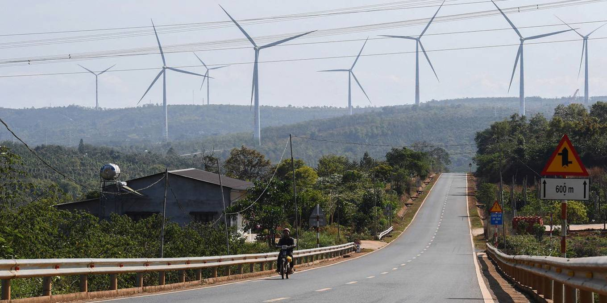

GrainMate Grain Moisture Meter
GrainMate - an easy-to-use grain moisture meter - helps farmers detect moisture levels in grains in order to determine if they are dry enough for harvest, storage or sale.
- Key Facts:
- According to the FAO, over 30% of grains produced in Africa are lost to post-harvest losses.
- One factor that contributes to such high losses includes high moisture content in grains.
- With GrainMate, farmers insert the attached probe into a bag of grain, select the grain type and read the moisture content off an LCD screen.
- Farmers compare the reading with an attached chart to know whether the grain is dry enough for storage.
- GrainMate costs four times less than similar solutions.
Catalytic Capital Holds the Key to Southeast Asia’s Green Transition
It is now abundantly clear that no single country or bloc can achieve net-zero emissions on its own, and that a just energy transition will require robust public-private partnerships. According to a 2023 report by the International Finance Corporation and the International Energy Agency, Southeast Asian countries need $9 billion in concessional financing per year until 2031-35 to mobilize the necessary private capital to decarbonize their economies. Southeast Asia, with its numerous island communities and vast coastal areas, is one of the world’s most climate-vulnerable regions. Its carbon dioxide emissions doubled between 1990 and 2020, reflecting rapid economic growth, and energy demand is expected to triple by 2050, underscoring the need for innovative and cost-effective technological solutions.